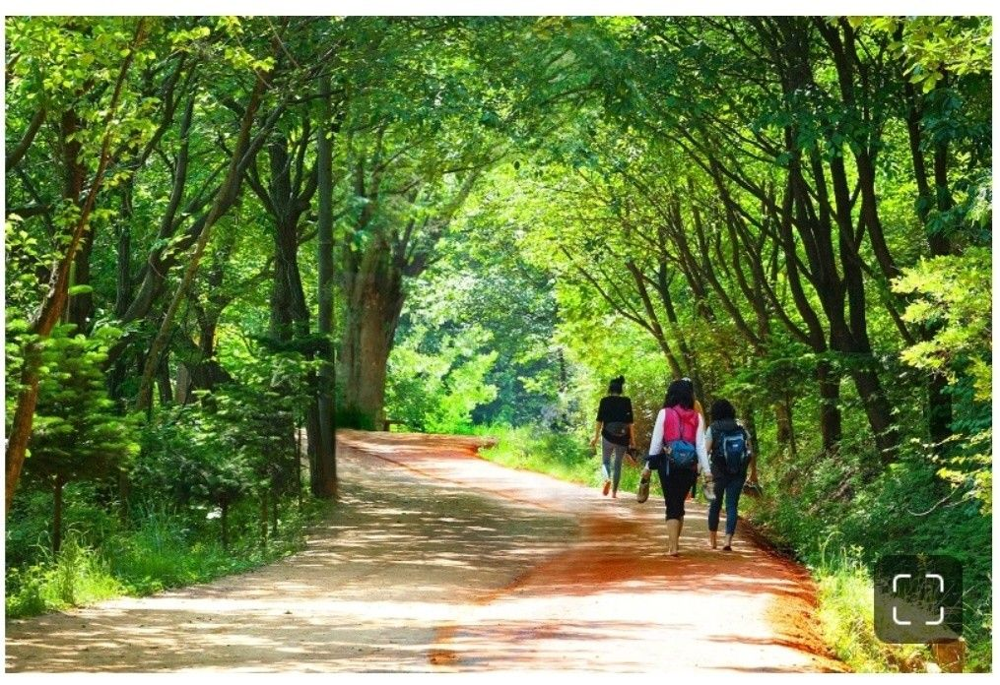
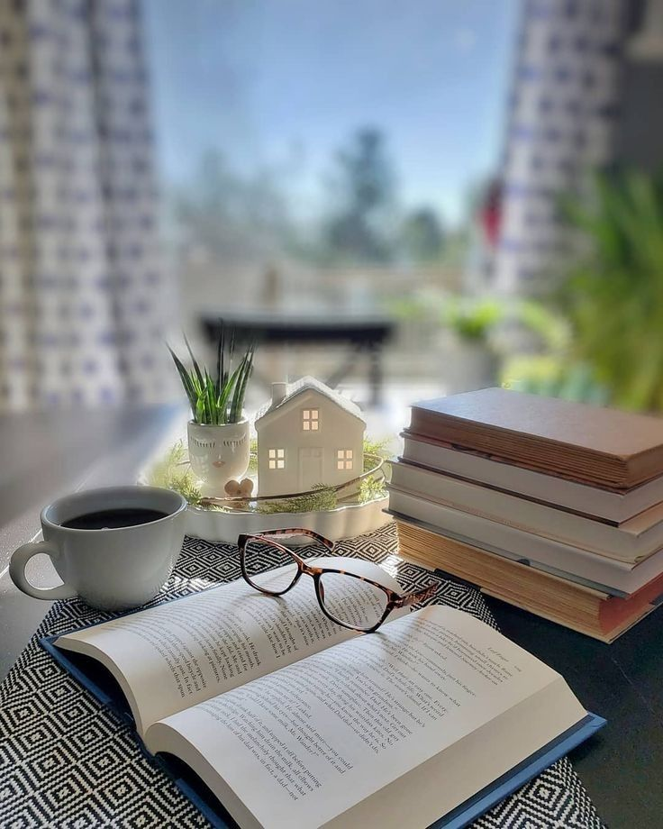
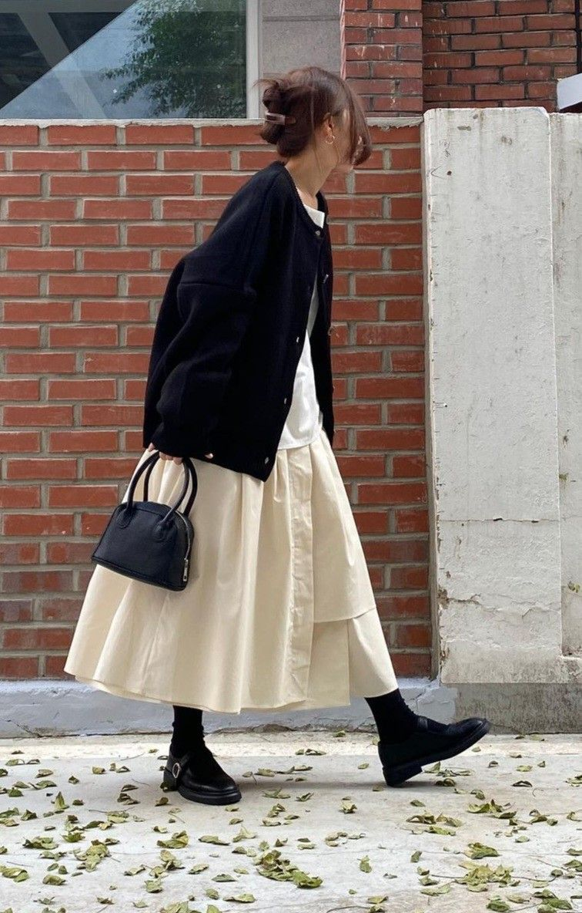
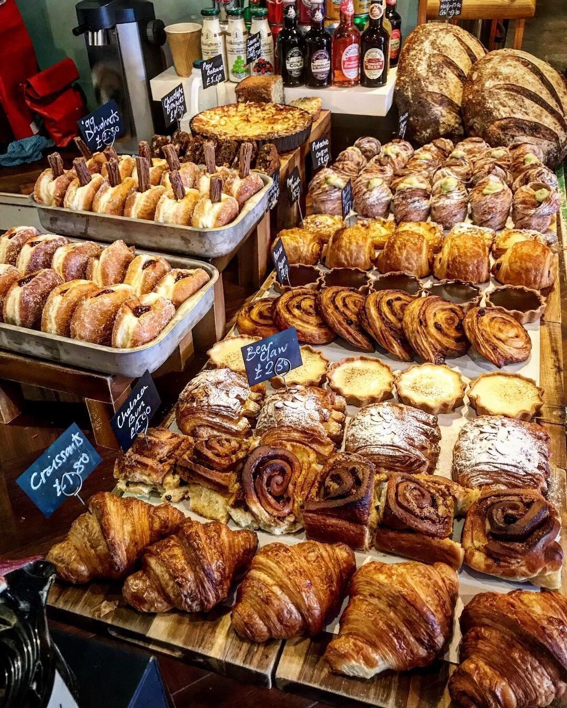

><!DOCTYPE html>
<html lang="ko">
<head>
    <meta charset="UTF-8">
    <meta name="viewport" content="width=device-width, initial-scale=1.0">
    <title>Document</title>
    <link href="
  https://cdn.jsdelivr.net/npm/reset-css@5.0.2/reset.min.css"
  rel="stylesheet">
  <style>
    body{
        background-color: brown;
        position:relative;
        font-family: 'Franklin Gothic Medium', 'Arial Narrow', Arial, sans-serif;
    }
    header h1 {
        text-align: center;
        margin: 02rem auto;
        font: 4rem;
        font-weight: 800;


    }
    section h2{
        text-align: center;
        margin: 2rem auto;
    }
    ul{
        list-style-type: none;padding: 0;
        text-align: center;
        
    }
    .keyword-box{
        display: flex;
        justify-content: center;
        gap:2rem;
        margin-bottom: 2rem;
    }
    .gradient-bar{
     width:60vw;
     height: 3rem;
    background: #000000;  /* fallback for old browsers */
    background: linear-gradient(to right, #0f9b0f, #000000); /* W3C, IE 10+/ Edge, Firefox 16+, Chrome 26+, Opera 12+, Safari 7+ */

     margin:0 auto;
    }
    .img-grid{
        display: flex;
        justify-content: center;
        gap: 2rem;
        margin-top: 1rem;
        flex-wrap: wrap;
    }
    .like-list{
        width:200px ;
        text-align: center;


    }
     .like-list img{
        width: 200px;
        height: 200px;
        object-fit: cover;
        border-radius: 50%;
        transition: all .5s;
        filter: grayscale(100%);
     }
     .like-list img:hover{
        filter :grayscale(0%);
        box-shadow:0 8px 10px gray;
        transform: scale(1.2);
     }
     @media screen and (max-width:480px){
        .img-grid{
            flex-direction: column;
            align-items: center;
        }
        .like-list{width: 100%;}
    }
    @media screen and (min-width:481px) and (max-width:1023px){ /*태블릿의 경우에 481px부터 ~ 1023px 까지는*/
        .like-list{
            width: 45%;
        }
    }

    @media screen and (min-width:1024px){ /*PC의 경우에 1024px 부터는*/
        .like-list{
            width: 20%;
        }
    }
  </style>
  
     
    

</head>
<body>
    <header>
 <h1>Gil Dong</h1>
 </header>
        <section>
            <h2>컴 꾸러기</h2>
              <ul class="keyword-box">
                <li class="keyword-list">호기심많은</li>
                <li class="keyword-list">진취적인</li>
                <li class="keyword-list"> 다정한</li>
                <li class="keyword-list">감성적인</li>
              </ul>
        </section>
        <section>
            <h2>My Color</h2>
              <div class="gradient-bar"></div>
        </section>
        <section>
            <h2>My Hobby</h2>
              <ul class="img-grid">
                <li class="like-list">산책</li>
                <li class="like-list">독서</li>
                <li class="like-list">캠핑</li>
                <li class="like-list">옷</li>  
              </ul>
        </section>
        <section>        
            <h2>My Food</h2>            
              <ul class="img-grid">
                <li class="like-list">떡볶이</li>
                <li class="like-list">김밥</li>
                <li class="like-list">쫄면</li>
                <li class="like-list">빵</li>
              </ul>
        </section>
        <footer>
          <address>
            <h2>Contact</h2>
              <ul>
                <li class="contact-list">OOO-OOOO-OOOO</li>
                <li class="contact-list">aOO@OOO.com</li>
              </ul>
          </address>
        </footer>
    
</body>
</html> 

